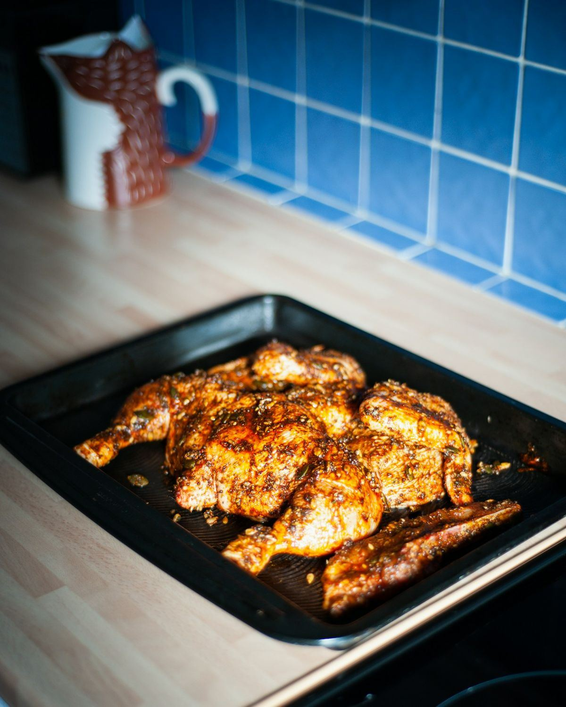

Meal ideas
5 High Protein Dinner Ideas Ready in 30 Minutes

This guide contains affiliate links. If you buy through them, Holistic Life may earn a small commission at no extra cost to you. How we use affiliate links.
Quick answer
- A high protein dinner is built around a protein food such as poultry, fish, eggs, beans or tofu.
- All five dinners below take about 30 minutes and use ordinary grocery store ingredients.
- Each recipe has a swap, so you can change it for what is in your kitchen.
- Some nights cooking is not happening, and a meal kit or a ready meal is a fair backup.
Dinner is the meal most of us are too tired to plan. These five high protein dinner ideas are built to be quick, simple and filling, with short ingredient lists and steps you can follow after a long day. This is a nurse-run site, and the goal is food that is easy to repeat.
What makes a dinner high protein?
In general terms, a high protein dinner is one where a protein food is the center of the plate. USDA MyPlate counts seafood, meat, poultry and eggs, beans, peas and lentils, and nuts, seeds and soy products as protein foods. It also suggests eating a variety of them. So chicken, fish, eggs, tofu and beans all qualify, and you can mix them across the week.
You do not need to count anything. Start with a protein, add a vegetable and a grain or starch, and you have a balanced dinner.
A note on cooking: an instant-read thermometer is the reliable way to know food is done, because color is not. FoodSafety.gov lists a safe minimum of 165°F for poultry, including ground turkey, and 145°F for fish. Wash your hands after touching raw meat, and keep raw and cooked foods apart.
1. Sheet pan chicken thighs and vegetables
Ingredients: boneless chicken thighs, broccoli florets, sliced bell pepper, a red onion, olive oil, garlic powder, paprika, salt, pepper, a lemon.
- Heat the oven to 425°F. Line a rimmed sheet pan or leave it bare.
- Toss the vegetables with half the oil and a pinch of salt. Spread them on one side of the pan.
- Rub the chicken with the rest of the oil and the spices. Place it on the other side.
- Roast 20 to 25 minutes, until the chicken reaches 165°F in the thickest part. Squeeze the lemon over everything.
Swap: Use chickpeas and sweet potato cubes in place of chicken for a vegetarian version, and roast the potatoes first.
2. Turkey and black bean taco skillet
Ingredients: ground turkey, a can of black beans, corn, an onion, taco seasoning, salsa, grated cheese, tortillas or rice.
- Cook the onion in a large skillet until soft, about 4 minutes.
- Add the turkey and break it up. Cook, stirring, until it is browned all the way through and reaches 165°F.
- Stir in the seasoning, beans, corn and salsa. Simmer for 5 minutes.
- Top with cheese and serve in a tortilla, over rice or in a bowl.
Swap: Use crumbled tofu or lentils instead of the turkey.
3. Salmon rice bowls with edamame
Ingredients: salmon fillets, cooked rice, shelled edamame, a cucumber, a carrot, soy sauce, a little honey, rice vinegar, sesame seeds.
- Mix the soy sauce, honey and vinegar. Spoon a bit over the salmon.
- Cook the salmon in a lightly oiled skillet, skin side down first, for about 4 minutes per side, until it flakes easily with a fork (145°F).
- Warm the edamame in hot water for 2 minutes and drain.
- Build the bowls with rice, salmon, edamame, sliced cucumber and grated carrot. Drizzle with the remaining sauce and sprinkle with sesame seeds.
Swap: Canned salmon, baked tofu or shrimp all work well.
4. Egg fried rice with shrimp or tofu
Ingredients: cooked and chilled rice, eggs, peeled shrimp or cubed firm tofu, frozen peas and carrots, green onions, garlic, soy sauce, sesame oil.
- Heat a little oil in a large skillet. Cook the shrimp until pink and opaque, or the tofu until golden, about 3 to 4 minutes. Set aside.
- Scramble the eggs in the same pan until firm, then add the garlic and vegetables.
- Add the rice and stir for 3 minutes, breaking up clumps.
- Return the shrimp or tofu to the pan. Season with soy sauce, a few drops of sesame oil and green onions.
Swap: Cold rice fries best. Cauliflower rice or leftover quinoa also work.
5. White bean and chicken sausage soup
Ingredients: cooked chicken sausage, white beans, chicken or vegetable broth, spinach, an onion, garlic, diced tomatoes, Italian seasoning.
- Slice the sausage and brown it in a pot for 4 minutes. Add the onion and garlic and cook for 3 minutes.
- Add the broth, tomatoes, beans and seasoning.
- Simmer for 15 minutes.
- Stir in the spinach until it wilts.
Swap: Use lentils or pulled rotisserie chicken in place of the sausage.
Tools that make these easier
You probably own most of this already. If you are missing one, these are worth considering.
Rimmed sheet pan
One pan holds the whole dinner for the sheet pan recipe, and it is easy to clean. The rim keeps juices from running into the oven.
What to look for
- Heavy-gauge metal that does not warp in a hot oven
- A full rim on all four sides
- A size that fits your oven with a little room around it
See sheet pans on Amazon (paid link)
Instant-read thermometer
A thermometer takes the guessing out of cooking chicken, fish and eggs. It is the surest way to know that food is cooked through.
What to look for
- A reading in a few seconds
- A thin probe that will not leave a big hole
- A clear, easy to read display
See food thermometers on Amazon (paid link)
Large skillet
Three of these dinners use one big skillet. A wide pan gives food room to brown instead of steam.
What to look for
- A wide, flat base, about 12 inches across
- A sturdy handle that stays cool or has a grip
- A lid, if possible, for the soup and the skillet dinners
See large skillets on Amazon (paid link)
Glass storage containers
Dinner leftovers make an easy lunch. Glass containers go from fridge to microwave and do not hold on to smells.
What to look for
- Locking lids with a tight seal
- Microwave and oven safe glass
- A few sizes that stack neatly
See glass containers on Amazon (paid link)
Storing leftovers
Refrigerate leftovers within 2 hours of cooking and plan to eat them within 3 to 4 days, according to the USDA. Reheat until they reach 165°F. Packing extra into a glass container makes tomorrow's lunch easy. If you work long shifts, our night shift meal prep guide shows how to build a full pack for work.
On nights when cooking is not happening
Some evenings the plan falls apart, and that is normal. A meal kit such as Home Chef or Green Chef sends measured ingredients and a recipe card, which can take the thinking out of dinner. Look at the menu for protein-forward options. For gift ideas that help a busy cook, try our meal prep gifts.
Frequently asked questions
What counts as a protein food?
USDA MyPlate lists seafood, meat, poultry and eggs, beans, peas and lentils, and nuts, seeds and soy products. Eating a variety is a good idea.
How long do leftovers keep?
The USDA says refrigerate leftovers within 2 hours of cooking and plan to eat them within 3 to 4 days. Reheat them until they reach 165°F, checked with a food thermometer.
Sources
Save this guide for later
Tap a pin to save it to your Pinterest boards.